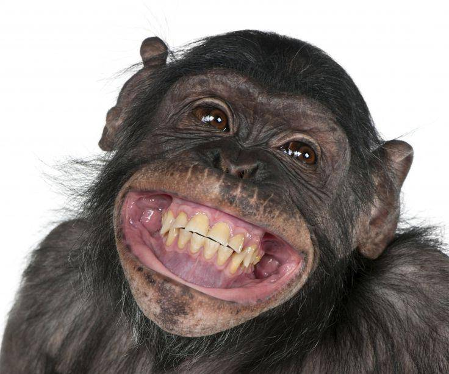

Обезьяна (антропоид, высший примат) – это млекопитающее, наиболее близкое по строению к человеку, относится к отряду приматы, подотряду сухоносых приматов, инфраотряду обезьянообразные (лат. Simiiformes).Длина тела взрослой обезьяны может варьироваться от 15 см (у карликовой игрунки) до 2 метров (у самца гориллы). Вес обезьяны тоже зависит от вида. Если масса тела маленькой обезьяны едва доходит до 150 грамм, то отдельные особи гориллы весят до 275 кг.
